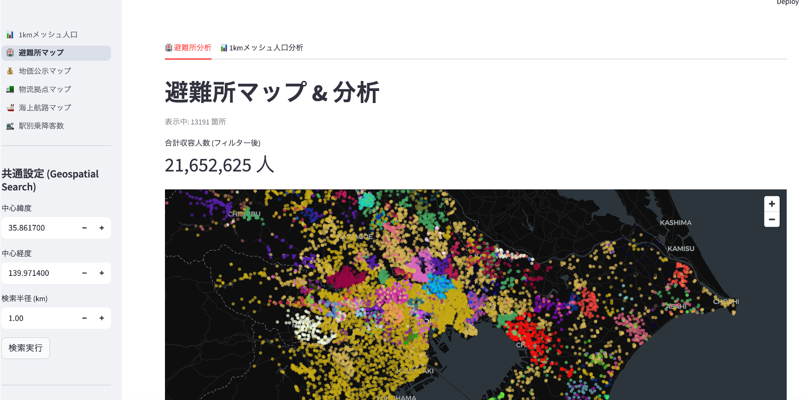
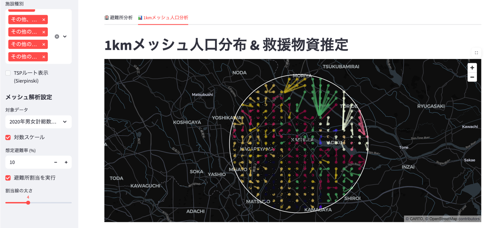
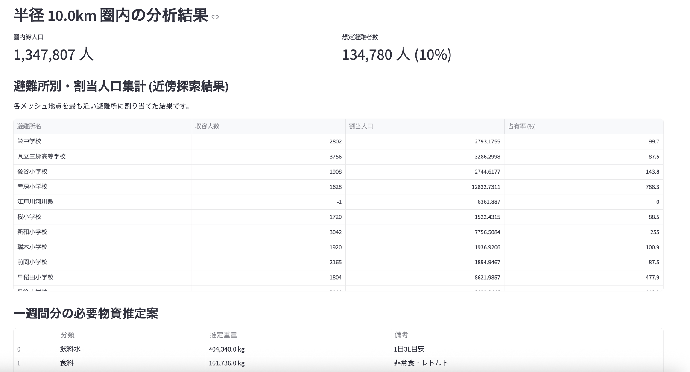
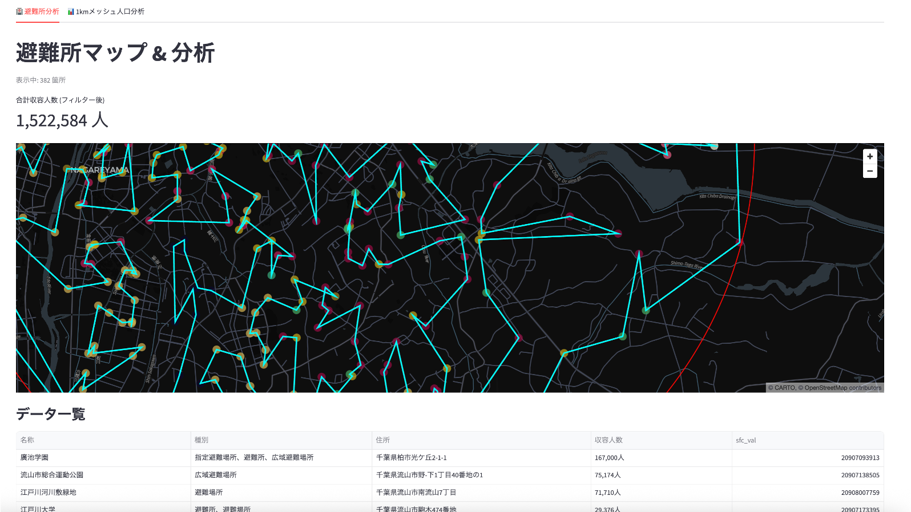
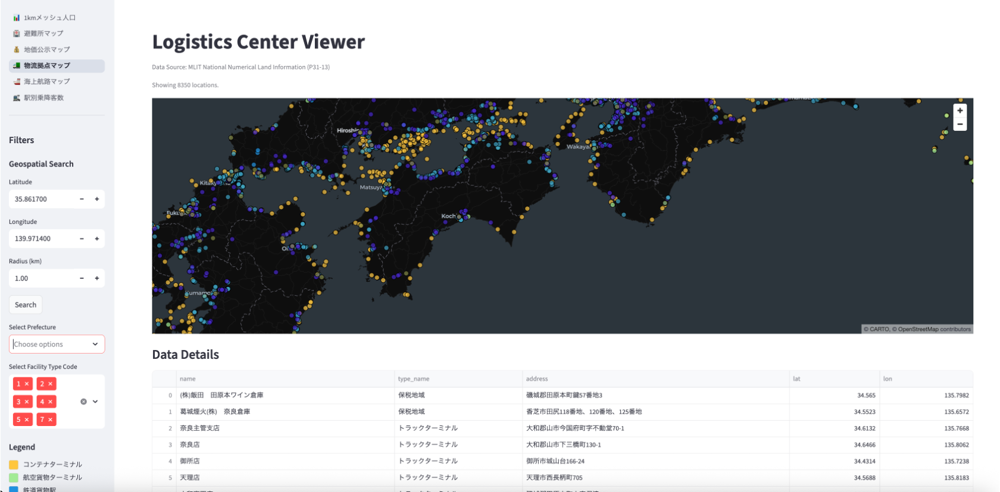
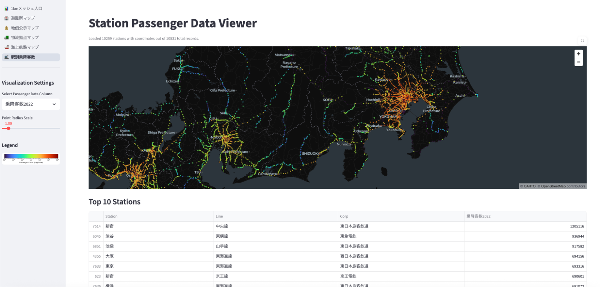
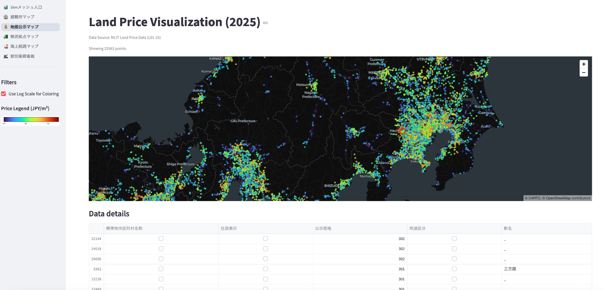
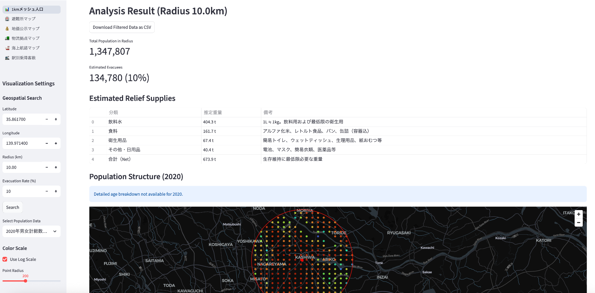

地域の安全をデータで守る。全国の避難所データと人口メッシュ統計を統合、
最適な避難所割当と救援物資の需要予測により、実効性の高い地域防災計画の策定を支援します。
🏥
避難所分析
全国の施設種別を瞬時に検索。巡回ルートの最適化で効率的な管理を実現
👥
人口メッシュ分析
1kmメッシュ単位の精密な人口動態把握。夜間・将来人口にも対応
📦
物資・割当推計
人口に基づき物資必要量を自動計算。最短距離での避難所割当をシミュレート
システム機能紹介

避難所の位置マッピングと種別フィルタリング

個別施設の詳細情報とGoogleマップ連携

空間充填曲線を用いた避難所巡回ルート描画

1kmメッシュ人口密度のヒートマップ可視化

緯度・経度と半径によるエリア人口抽出

避難率に基づく必要支援物資の自動計算

住民と最寄避難所のマッチングシミュレーション

時系列・年齢階層別の将来人口推計分析
避難所 & 救援管理
- 指定避難所・緊急避難場所の種別（洪水・地震等）検索
- Sierpinski空間充填曲線による高度なルート近似
- 施設キャパシティと収容予定人数のミスマッチ解消
- 水・食料・衛生用品のパッケージ別重量計算
高度な空間・人口分析
- 国土数値情報（1kmメッシュ）を用いた高精細マップ
- 対数スケールによる人口密集地と過疎地の鮮明な可視化
- Geospatial Searchによる特定圏域の人口集計
- 2050年までの将来人口推計と少子高齢化の地域予測